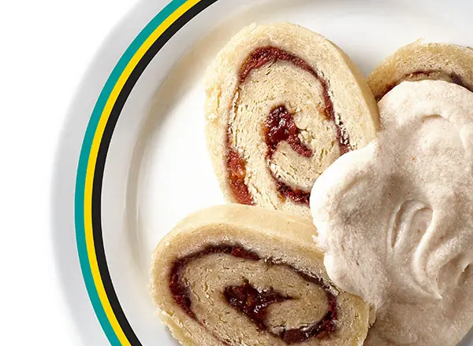

Bahamian Guava Duff is a sweet traditional dessert, typically smothered in a sweet rum butter sauce.
Recipe source
Ingredients
For Guava Duff
- 12 medium guavas*
- ½ cup sugar
- ¾ teaspoon ground cinnamon
- ¾ teaspoon ground allspice
- 4 cups flour (plus more for rolling)
- 1 tablespoon baking powder
- 1 teaspoon kosher salt
- ¾ cup shortening
- 1 cup milk
- 1 large egg
- Cotton (or linen) bag, for boiling
For Sauce
- ¼ cup unsalted butter
- 1 cup powdered sugar
- 1 teaspoon boiling water
- ⅛ teaspoon kosher salt
- 2 tablespoons rum (or brandy)
*If fresh guava is not available, substitute 1 cup guava marmalade. Add spices, but not sugar, and skip step 1.
Steps
- Make Guava Duff. Peel guavas, cut in half, and remove seeds. Dice guavas and strain, saving juice to flavor sauce if desired. Put guavas in large saucepan and add sufficient water to cover. Add sugar, cinnamon, and allspice and bring to a boil; reduce heat to medium-low and simmer 8–10 minutes or until fruit is soft.
- Combine flour, baking powder, and salt in large bowl. Cut in shortening using 2 forks, then stir in milk and egg to form a soft dough; knead until smooth. Dust work surface with flour and roll out dough to 12- x 18-inch rectangle.
- Place one-half guava mixture on the center third of dough and fold over one-third to cover. Place remaining half guava mixture on folded dough, fold over remaining third dough, and seal edges carefully.
- Bring large saucepan of water to a boil. Wrap dough in cotton or linen bag, tie top securely, and boil for 1 hour or until duff is set.
- Make Sauce. Beat butter in medium bowl with electric mixer on HIGH until soft. Beat powdered sugar in gradually. Add boiling water, salt, and rum. Beat until smooth and fluffy. Makes 1 cup.